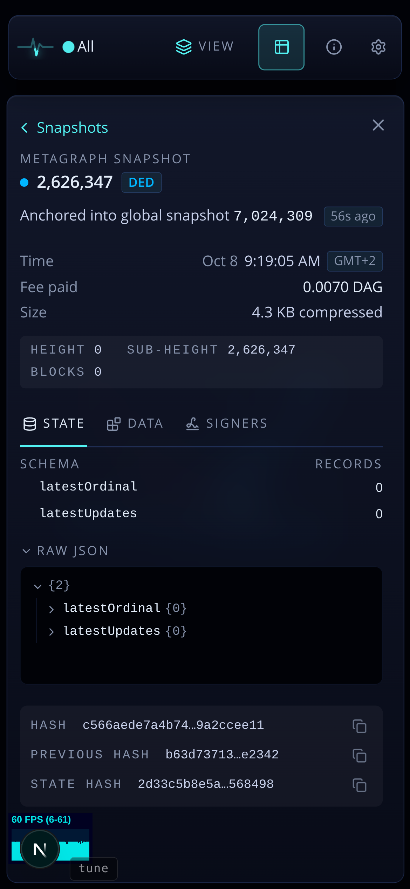

Ask: Height / Sub-height / Blocks take a lot of space; make the page feel less cluttered. Today they are a caps-mono plate between the facts and the tabs, a third type style on a page that already has two (fact rows, and the hash plate at the foot).

The hash labels shorten to "Previous" and "State" under a "Hashes" label, so they stop restating "hash" three times. Desktop takes the same order (its pane has the same three styles today).